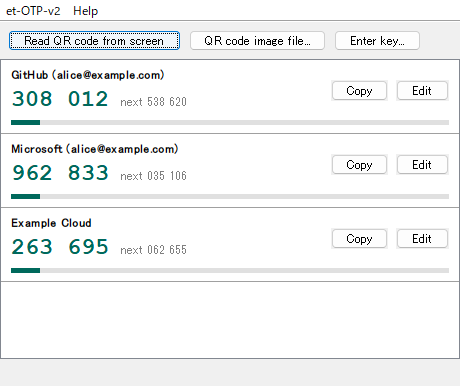

A TOTP soft token for your desktop
et-otp-v2 generates time-based one-time passwords (RFC 6238) for two-step verification. It is a small Java Swing program that registers a service by reading the QR code shown on your screen.
Download Source code
Features
- Generates two-step verification codes (TOTP, RFC 6238) and shows the next code and the remaining time. SHA-1, SHA-256 and SHA-512, 6 to 8 digits and any period are supported.
- Holds any number of services. Click a code or press Copy to copy it to the clipboard.
- Registers a service by reading the QR code shown on the screen; on Windows also from a window behind other windows. A QR code image file or the key typed in also works.
- Stores the services encrypted. On Windows, choose between protection for your Windows user (no password) and a password; on macOS and Linux a password is used.
- English and Japanese user interface.
- With password protection, locks again after a time without use or when the computer is locked.
- Filters the services by name and copies a code with the keyboard only; the order of the services can be changed.
Install and run
Download the portable edition for your OS from the Releases page. It bundles a Java runtime built from Amazon Corretto 25 (LTS), so no installation and no administrator rights are needed.
| OS | File | How to start |
|---|---|---|
| Windows | et-otp-v2-<version>-windows-x64-portable.zip | Extract it and double-click et-otp-v2.bat. |
| macOS (Apple silicon) | et-otp-v2-<version>-macos-arm64-portable.tar.gz | Extract it and double-click et-otp-v2.command. If it does not start, run sh et-otp-v2.command in Terminal. |
| Linux | et-otp-v2-<version>-linux-x64-portable.tar.gz | Extract it and run sh et-otp-v2.sh in a terminal. |
The bundled Java executables are Amazon's original Corretto binaries with Amazon's signatures. On a company or organization computer, check your organization's software policy first.
With Java 25 or later installed, you can also use the plain JAR:
java -jar et-otp-v2-<version>.jarTo build it yourself, run mvn verify and use the JAR in the target folder.
Register a service
- Start et-otp-v2. On the first start a setup wizard opens: choose the protection, and a password if you protect with a password. You can change the location of the configuration file with Change..., or choose an existing configuration file to keep using it. On Windows it can also create a desktop shortcut.
- In the browser, open the two-step verification setup page of the service so that it shows the QR code.
- In et-otp-v2, press Read QR code from screen. A list of your screens and windows opens, and the one with the QR code is selected. Check it, press Read, check the name of the service and press OK to register it. The images are only used for the list and to find QR codes; they are not saved.
- Type the code shown by et-otp-v2 into the setup page of the service. Without this step the service does not complete the setup.
If no QR code is found, check that it is not too small (enlarge the page with Ctrl and +). With a QR code image file use QR code image file..., and with the key (a text of letters and digits) use Enter key....
With many services, type part of a name into the search field: only the services whose name contains the text are shown. Case and the difference of full width and half width characters are ignored. When a button of the window has the focus, typing letters or digits starts the search; for Japanese, press Ctrl+F (⌘F on macOS) to go to the search field first. If one service is shown, Enter copies its code; with several, choose one with the up and down keys first. Esc shows all services again.
To change the order, press Edit of a service or right-click its row, and choose Move up, Move down or Move to top. The order is saved in the configuration file, and --list on the command line uses it as well. While the list is filtered, the order cannot be changed.
The services are saved to .et-otp.properties in your home folder. To move the file to another folder or name, open et-OTP-v2 → Settings and press Move... on the General tab. The chosen location is remembered in .et-otp-location.properties in your home folder and used on the next start; a desktop shortcut created by et-otp-v2 is updated as well. Without a chosen location, a .et-otp.properties in the working directory is used if it exists (same as et-otp 1.x). Help → About shows the full path. The language and the window position are saved to .et-otp-ui.properties in the same folder.
With password protection, the services are locked again so that nobody can see the codes while you are away. Locking removes the codes from the window and asks for the password again; a code you copied is also removed from the clipboard if it is still there. Open dialogs (entering a key, the settings) are closed, and unconfirmed changes are not saved. By default, et-otp-v2 locks after 5 minutes without use, and when the computer is locked or sleeps. Change this on the Lock tab of et-OTP-v2 → Settings, where locking when the window is minimized can be switched on as well. To lock at once, choose et-OTP-v2 → Lock (Ctrl+L, ⌘L on macOS). A locked computer is detected on Windows only; on macOS and Linux, et-otp-v2 locks after the time without use and after sleep. With protection for your Windows user, no password is needed to open the services, so they are not locked.
When locking, the key derived from the password is overwritten in memory. The keys of the services are Java strings, which cannot be overwritten; they are freed later as unused memory.
The protection can be changed on the Protection tab of et-OTP-v2 → Settings. Services protected for your Windows user cannot be read on another computer or by another Windows user, so on a new computer you register them again. Keep the backup codes (recovery codes) of your services somewhere other than the computer.
The user interface follows the language of the OS: Japanese on a Japanese system, English otherwise. To change it, open et-OTP-v2 → Settings and select the language on the General tab.
Get a code on the command line
Started with --code <name>, et-otp-v2 writes the current code of the service without opening the window, so a batch file or script can use it where a 2-step verification code is needed. With the portable edition for Windows:
for /f "delims=" %%c in ('call "C:\tools\et-otp-v2\et-otp-v2.bat" --code AWS') do set MFA_CODE=%%c
if not defined MFA_CODE exit /b 1- The name is the name shown in et-otp-v2. If no service has exactly this name, the case is ignored.
--listwrites the names of the registered services. - If the services are protected with a password, you are asked for it; the password is not shown while you type. With protection for your Windows user, the code is written without a question.
- If the code changes within 3 seconds, the next code is waited for and written.
- Only the code goes to the standard output; the password prompt and errors go to the standard error output. The exit code is 0 when done, 1 when failed and 2 for wrong options.
- The configuration file is only read, so this also works while the window is open. Files in the format of et-otp 1.x and et-otp-v2 2.0 cannot be read: open them once in the window to convert them first.
- With the portable edition for macOS run
sh et-otp-v2.command --code AWS, for Linuxsh et-otp-v2.sh --code AWS, with the plain JARjava -jar et-otp-v2-<version>.jar --code AWS.
Upgrading from et-otp 1.x and et-otp-v2 2.0
et-otp-v2 reads the configuration files of the original et-otp and of et-otp-v2 2.0, so you can keep using your existing .et-otp.properties. Start et-otp-v2 in the same folder and unlock it with your current password.
On the first successful unlock, et-otp-v2 copies the old file to .et-otp.properties.v1.bak (et-otp 1.x) or .et-otp.properties.v2.bak (et-otp-v2 2.0) and re-writes .et-otp.properties in the new format, which holds several services.
After upgrading from et-otp 1.x, check the code once. The old format cannot detect every wrong password. If the codes are not accepted by the service, restore the backup file and unlock again with the correct password.
et-otp 1.x and et-otp-v2 2.0 cannot read the new format. If you need to go back, use the backup file. Once the new codes work, delete the backup.
| et-otp 1.x | et-otp-v2 | |
|---|---|---|
| Key derivation | PBKDF2-HMAC-SHA1, 1,000 iterations, 128-bit key | PBKDF2-HMAC-SHA256, 600,000 iterations, 256-bit key (password protection) |
| Encryption | AES in ECB mode with PKCS#5 padding | AES-256-GCM with a random 96-bit IV (password protection), or Windows DPAPI |
| Wrong password / tampering | Not always detected | Always detected |
License and credits
et-otp-v2 is free software under the GNU General Public License v2.0 only.
It is a continuation of et-otp by Bernd Eckenfels. It includes code from the HOTP reference implementation in RFC 4226, the Base32 implementation of the Google Authenticator project, and a Java port of the QR code decoder quirc by Daniel Beer (ISC license).